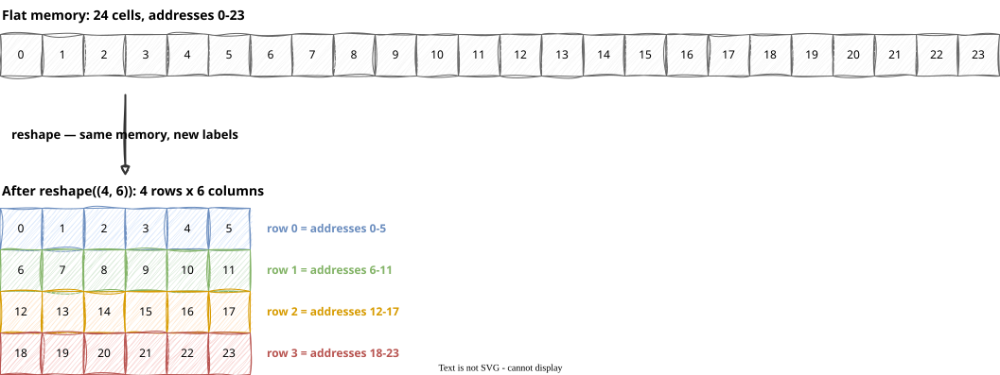
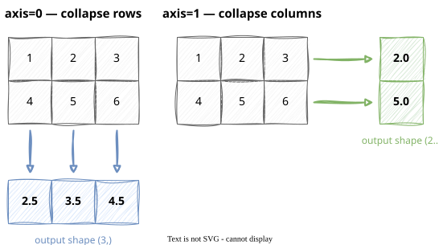
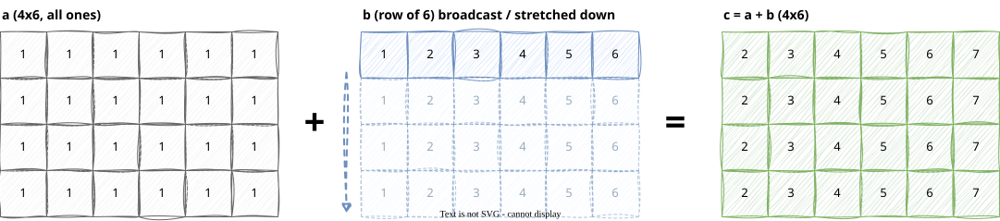

Module 0: Course Intro, Python & NumPy Foundations
list can hold anything, in any mix — flexible, but that flexibility is exactly what makes it slow at scale (Session 2’s “checking types every iteration” cost)array gives up that flexibility on purpose: one fixed type, laid out as one contiguous block of memory| dtype | bytes | use case |
|---|---|---|
float64 |
8 | NumPy’s default, high precision |
float32 |
4 | GPU default, half the memory of float64 |
int32 |
4 | indices, counts |
float32 efficiently; using float64 on a GPU can be noticeably slower and always uses twice the memoryfloat32 throughout this course, starting today — get in the habit nowreshape doesn’t move or copy any numbers — it just changes how the same block of memory is interpreted(rows, cols): b.shape == (4, 6)[row, col] and slicing [start:stop] are the exact patterns from Session 2’s list-slicing slide, now extended to two dimensions
axis=0 collapses rows together — you get one result per columnaxis=1 collapses columns together — you get one result per row(2, 3) with axis=0 leaves shape (3,)np.sum, np.max, np.min, np.argmax all take this same axis parameter
np.sum, np.max, and every other axis-aware reduction6 matches 6 — compatible
b in memory; it just reuses the same 6 numbers for every rowscores > 0.5 doesn’t compare once — it compares every element, producing a full array of True/FalseTrue positions — no loop, no iffor loop over an array processes one element at a time, and for every single element, Python re-checks the type, re-does bounds checking, and re-dispatches the operation — overhead paid 2,000,000 times for a 2,000,000-element arrayVectorization works when every output element can be computed independently — NumPy doesn’t care what order it processes them in. Some computations don’t have that property.
fib[i] cannot exist before fib[i-1] doesi needs the result of step i-1, not just its positionx**2 + 1, boolean masks, dot products — every output element only needs the input values, never another output\[ \mathbf{u} = [u_0, u_1, u_2, \cdots , u_{D-1}] \\ \mathbf{v} = [v_0, v_1, v_2, \cdots , v_{D-1}] \\ \\ \mathbf{u} \cdot \mathbf{v} = u_0 v_0 + u_1 v_1 + \cdots + u_{D-1} v_{D-1} \]
song_a = np.array([0.6, 0.8, 0.0], dtype=np.float32) # "fingerprint" vector
song_b = np.array([0.8, 0.6, 0.0], dtype=np.float32) # similar mood/tempo to a
song_c = np.array([0.0, 0.0, 1.0], dtype=np.float32) # totally different
print(np.dot(song_a, song_b)) # close to 1.0 — similar
print(np.dot(song_a, song_c)) # 0.0 — unrelated@ call computes 100 million individual multiply-and-add pairs — every query against every database songQ @ D.T above calls into parallel C code — but any Python for loop you write yourself still runs one instruction at a time on one coreCheckpoint CK-02 (Friday, last 20 minutes of Lab 2) will ask you to:
for loopnp.dotCOSC435 · Module 1 · Intro